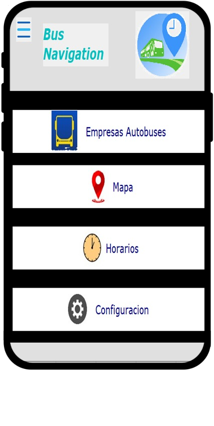
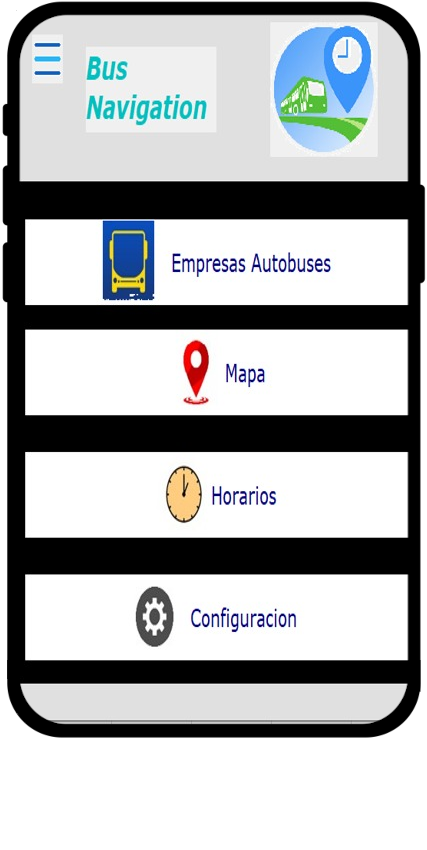

El transporte es una parte esencial de la vida urbana. Uno de los vehículos más utilizados es el autobús, pero suele tener diversos problemas. El más habitual es no saber en qué momento el autobús puede pasar o no saber que bus puede ser útil para transportarnos a algún lugar que no conozcamos.
En esos momentos desearíamos poder saber en qué lugar viene nuestro autobús y el tiempo estimado en el que pasara para poder tomarlo, y en caso tal de que el bus tuviese una falla mecánica o un accidente también estar informado bien sea para esperar el siguiente o tomar otros buses que nos acerquen a nuestro destino.
El proyecto surge de la necesidad de solucionar los problemas que enfrentan las personas al utilizar el transporte público, específicamente los autobuses. Uno de los problemas más comunes es no saber en qué momento el autobús puede pasar o no saber qué autobús tomar para llegar a un lugar desconocido. En este sentido, el proyecto busca proporcionar el desarrollo de una aplicación para dar información en tiempo real sobre la ubicación y el tiempo estimado de llegada de los autobuses, lo que permitiría a los usuarios planificar mejor sus viajes y reducir el tiempo de espera.